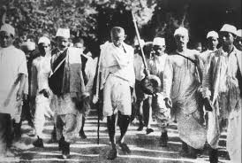

- 6 April – In an act of civil disobedience, Mahatma Gandhi breaks British law after marching to the sea and taking salt.
- 18 April – Chittagong armoury raid also known as Chittagong uprising
- 4–5 May – Mohandas Gandhi is arrested again.
- October – First Round Table Conference opens in London.
1930: Dandi March

Gandhiji and his 80 followers marched 241 miles from Sabarmati Ashram to coastal town of Dandi (now located
in Navasari district, Gujarat)where they broke the government law by gathering natural salt found on the sea
shore, and boiling sea water to produce salt.
March to Dandi. On 12 March 1930, Gandhi and 78 satyagrahis, among whom were men belonging to almost
every region, caste, creed, and religion of India, set out on foot for the coastal village of
Dandi in Navsari district of Gujarat, 385 km from their starting point at Sabarmati Ashram.